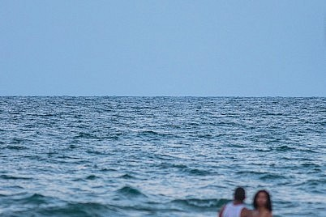

Diseño con fotografía digital!
Aprende de una forma rápida todo sobre la fotografía digital.
Si deseas información sobre todos nuestros cursos de diseño y fotografía rellena el formulario.
Distancia Focal y Trepidación
Distancia Focal y Trepidación. La distancia focal influye, y mucho, en la trepidación. Cuanto mayor sea la distancia focal a la que estemos disparando, mayor será la velocidad de obturación necesaria para que la fotografía no se trepide. ¿Por qué? Es muy fácil ver esto con un ejemplo práctico. Monta en tu cámara el objetivo más angular que tengas. Si solo tienes un objetivo zoom, usa la menor distancia focal que te permita poner. Mira a través del visor y fíjate en el movimiento que provoca tu propio pulso. No se nota mucho, ¿verdad?
Rompiendo la regla de los tercios
Cuando se habla de composición es inevitable hablar de normas, y una de las más famosas es la conocida regla de los tercios. Esta regla, que es una simplificación de la proporción áurea, suele ayudarnos a dirigir la mirada del espectador en nuestra fotografía, y a lograr que nuestra imagen tenga una composición más equilibrada. Pero no siempre ese es nuestro propósito, y por eso en este artículo te daré las razones por las que puedes romper.

¿Qué Es la Hora Azul?
La hora azul, como su nombre indica, es ese momento justo después (en el caso de la puesta de sol) de la hora dorada, cuando el cielo ha perdido prácticamente esos tonos naranjas y amarillos y empieza a predominar un azul intenso. Una característica de la hora azul, es que por el horizonte por donde se ha puesto (o ha salido) el sol tenemos un degradado tonal de azul a naranja. Ese azul del cielo se va oscureciendo poco a poco por lo que es obligatorio disponer de un trípode para poder hacer fotografías.- Elementos de la fotografía
- Que es una cámara de fotos
- Tipos de cámaras
- Manejo de la cámara